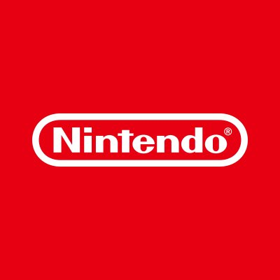

| 企業名 |
ロゴ |
説明 |
| Google |
 |
Google LLC（グーグル）は、インターネット関連のサービスと製品に特化したアメリカ合衆国の企業 (LLC)。
世界最大の検索エンジン、オンライン広告、クラウドコンピューティング、ソフトウェア、ハードウェア関連の事業がある。アメリカ合衆国の主要なIT企業で、 ビッグ・テックの一つ。
雇ってくださいお願いします。
|
| LINEヤフー株式会社 |
|
Yahoo! JAPAN（ヤフー・ジャパン）は、ソフトバンクグループのLINEヤフー株式会社（法人としては初代ヤフー株式会社）が運営するポータルサイト。
ホームページ（https://www.yahoo.co.jp）は2009年時点で、1日平均19億のアクセス数を誇り、日本における検索エンジンとしては過半数のシェアを獲得していた。
雇ってくださいお願いします。
|
| 任天堂株式会社 |
 |
任天堂株式会社（にんてんどう、英: Nintendo Co.Ltd.）は、日本の代表的なグローバル企業の一社であり、主に玩具やコンピュータゲームの開発・製造・販売を行っている。
本社所在地は京都府京都市南区。
『スーパーマリオブラザーズ』（マリオシリーズ）の主人公「マリオ」など、任天堂のゲームソフトに登場するキャラクターは世界的に認知されているものが多く、2010年代からはキャラクターIPのゲーム外での活用を進めている。
雇ってくださいお願いします。
|